专题05 整式的加减相关解答题分类训练
（13种类型65道）

考点01 合并同类项
考点02 先去括号再合并同类项
考点03 化简求值
考点04 错解还原
考点05 定值问题
考点06 “不含”类问题
考点07 信息丢失
考点08 幻方
考点09 去绝对值后合并同类项
考点10 定义新运算
考点11 “无关”类问题
考点12 面积相关整式的加减
考点13 方案问题相关整式的加减

考点01 合并同类项
1．合并同类项：
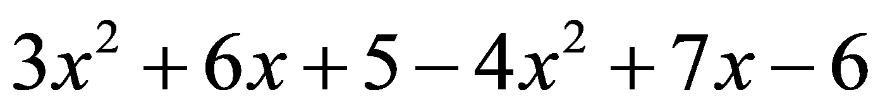
．2．合并同类项： ．
．
3．合并同类项：
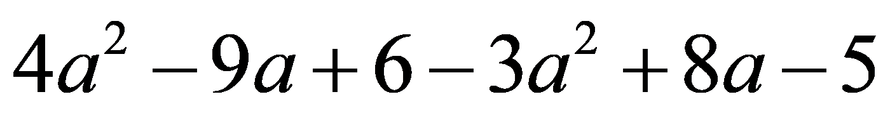
．4．合并同类项：
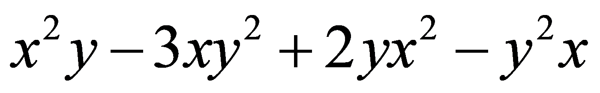
．5．合并同类项： ．
．
考点02 先去括号再合并同类项
6．去括号，合并同类项： ．
．
7．去括号，合并同类项： ．
．
8．先去括号，再合并同类项： ．
．
9．先去括号，再合并同类项： ．
．
10．先去括号，再合并同类项：
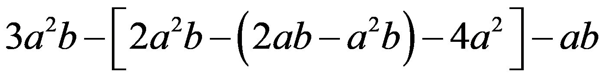
．考点03 化简求值
11．先化简，再求值：
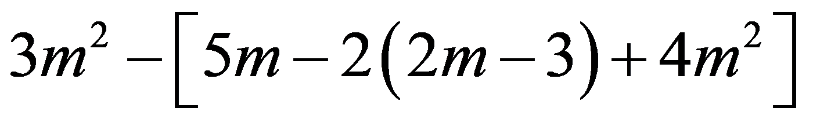
，其中 ．
．12．先化简，再求值：
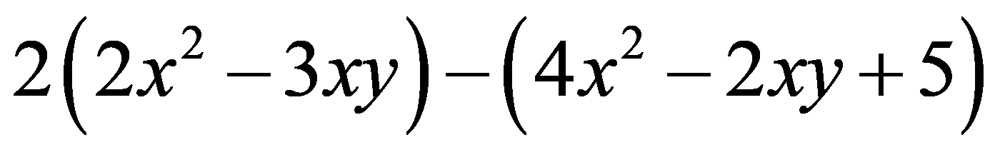
，其中 ，
，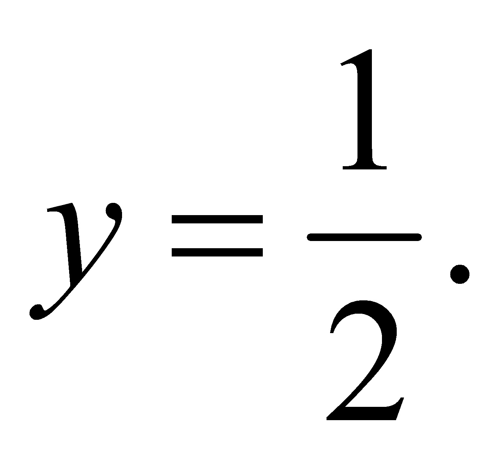
13．先化简，再求值：
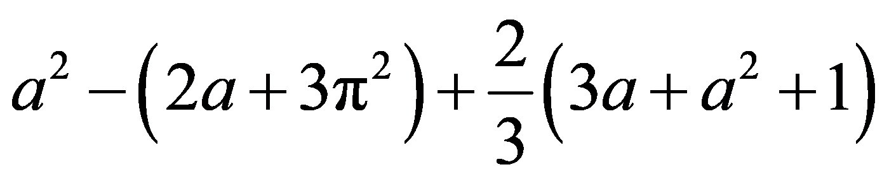
，其中 是相反数等于它本身的数．
是相反数等于它本身的数．14．先化简，再求值： ，其中
，其中 ．
．
15．先化简，再求值： ，其中
，其中
考点04 错解还原
16．有一个整式减去
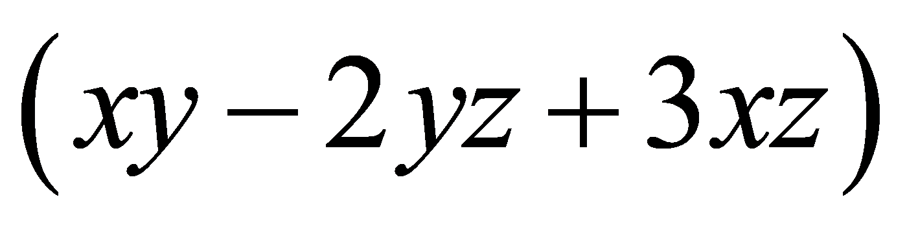
的题目，小春同学误看成加法了，得到的答案是 ．假如小春同学没看错，原来题目正确解答是什么？
．假如小春同学没看错，原来题目正确解答是什么？17．小马虎由于粗心，把原题“两个多项式A和B，其中
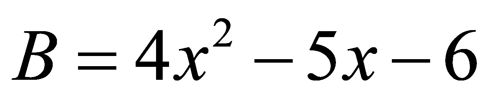
，求 ”中的“”错误地看成“
”中的“”错误地看成“ ”，结果求出的答案是
”，结果求出的答案是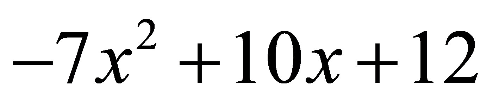
，求出正确的．18．小伟同学在数学课上做了一道题：已知两个多项式
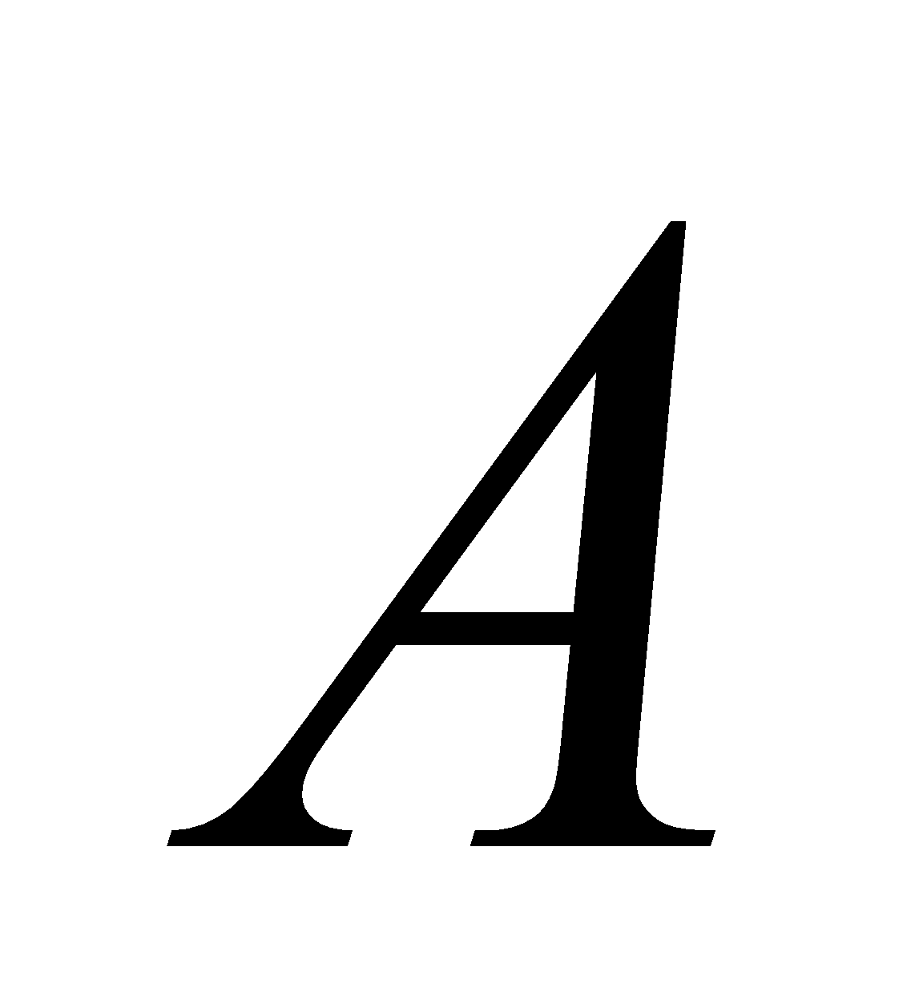
、 ，求
，求 的值，由于他的马虎错将看成
的值，由于他的马虎错将看成 ，求得结果为
，求得结果为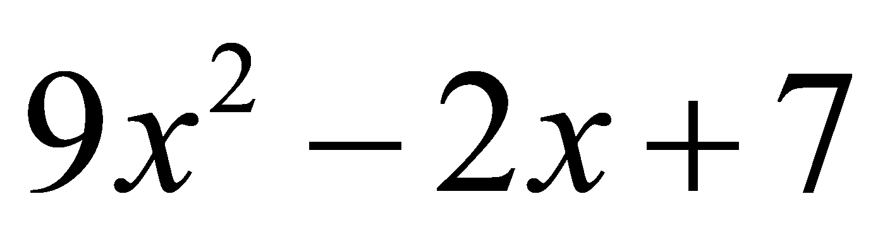
，已知 ，请你帮他求出正确的答案．
，请你帮他求出正确的答案．19．小红做了一道数学题：“已知两个多项式为 ，其中
，其中
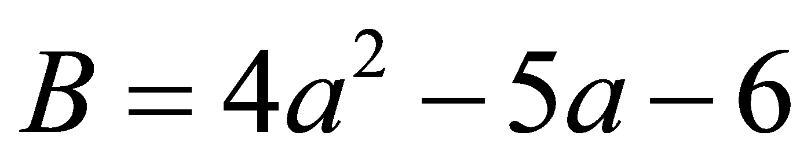
，求的值． ”粗心的小红误将“看成“”，结果求出的答案是 ，请你帮助小红求出正确的的结果．
，请你帮助小红求出正确的的结果．20．小伟同学在数学课上做了一道题：已知两个多项式A、B，求 的值，由于他的马虎错将看成，求得结果为，已知，请你帮他求出正确的答案．
的值，由于他的马虎错将看成，求得结果为，已知，请你帮他求出正确的答案．
考点05 定值问题
21．已知含字母 的代数式是：
的代数式是： ．
．
(1)化简这个代数式．
(2)观察化简后的代数式，无论字母 取何值，代数式的结果恒为定值，求
取何值，代数式的结果恒为定值，求 的值．
的值．
22．某同学做一道数学题，已知两个多项式A，B，其中 ，试求．这位同学把误看成了，结果求出的答案为
，试求．这位同学把误看成了，结果求出的答案为 ．
．
(1)请你替这位同学求出的正确答案；
(2)当x取任意有理数时，
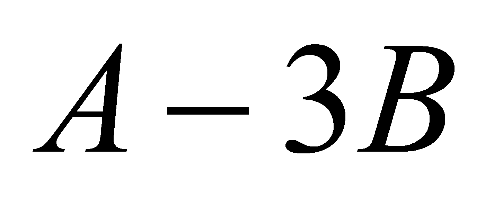
的值是一个定值，求y的值．23．已知：
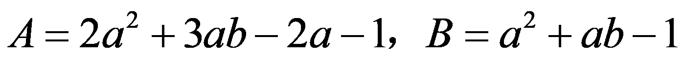
；(1)若 ，求的值．
，求的值．
(2)当取任何数值，的值是一个定值时，求 的值．
的值．
24．已知： ，
，
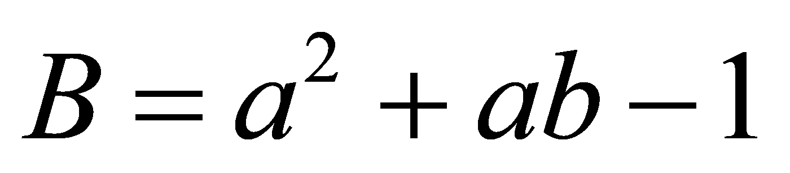
．(1)求
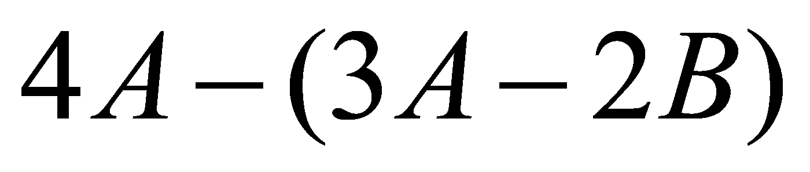
的值．(2)当a取任何数值，的值是一个定值时，求b的值．
25．已知
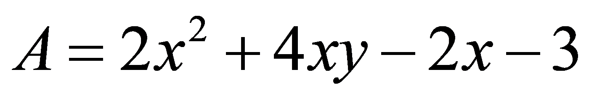
，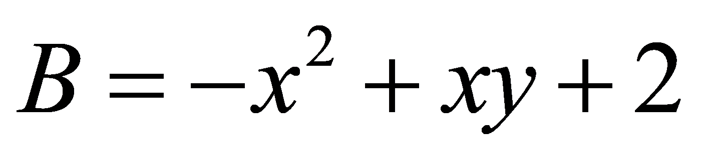
．(1)求 的值；
的值；
(2)若 取任意数，
取任意数，
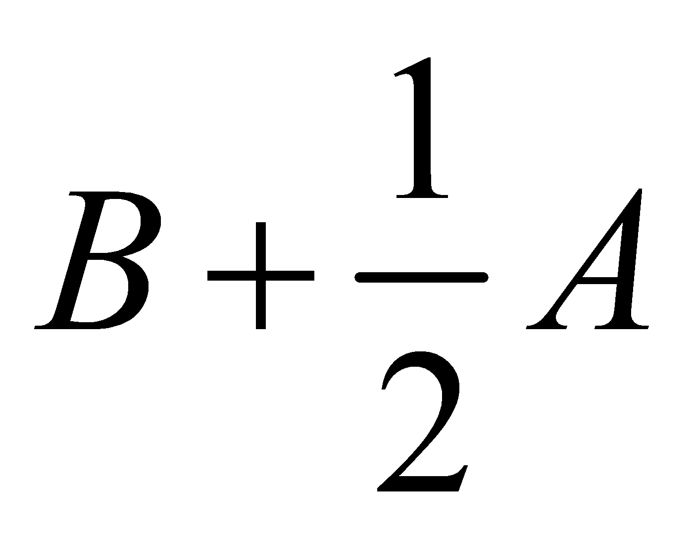
的值都是一个定值时，求 的值．
的值．考点06 “不含”类问题
26．若多项式
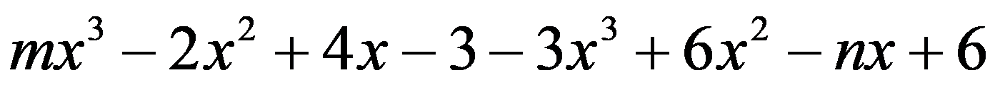
化简后不含x的三次项和一次项．(1)求m、n的值；
(2)求
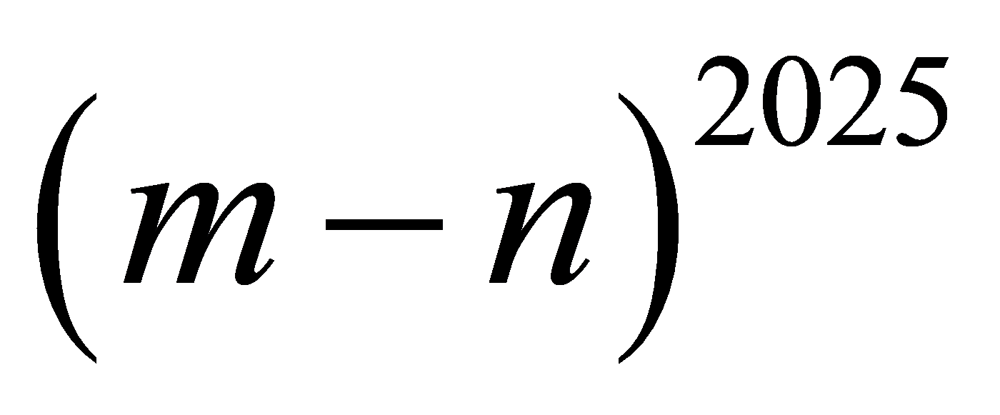
的值．27．若关于x、y的式子 不含二次项，求k的值．
不含二次项，求k的值．
28．已知关于x的多项式A，B，其中
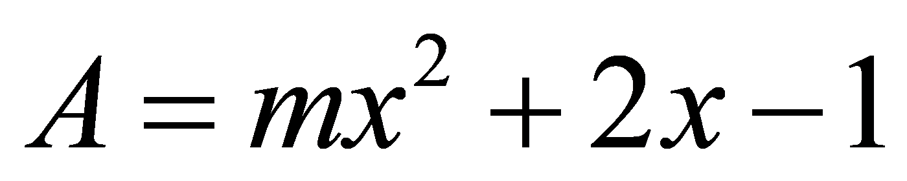
，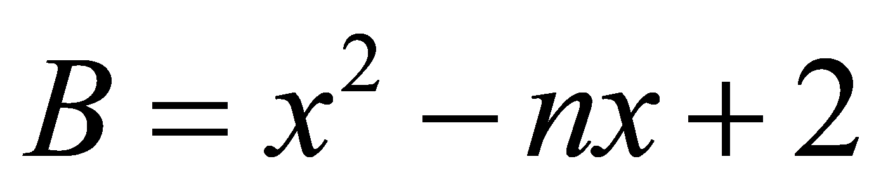
（m，n为有理数）．(1)当 ，
， 时，化简
时，化简 ；
；
(2)若的结果不含x项和 项，求
项，求
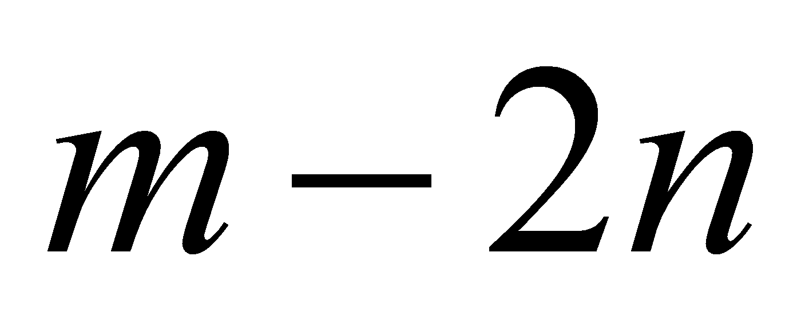
的值．29．若关于x，y的多项式 不含三次项，求
不含三次项，求 的值．
的值．
30．已知关于的多项式、，其中， 、为有理数）．
、为有理数）．
(1)化简 ；
；
(2)若的结果不含x项和项，求m、n的值．
考点07 信息丢失
31．老师在黑板上书写了一个正确的演算过程，小明不小心擦掉了一块，小亮说他记得小明擦掉的部分是一个二次三项式，黑板上剩下的过程为：
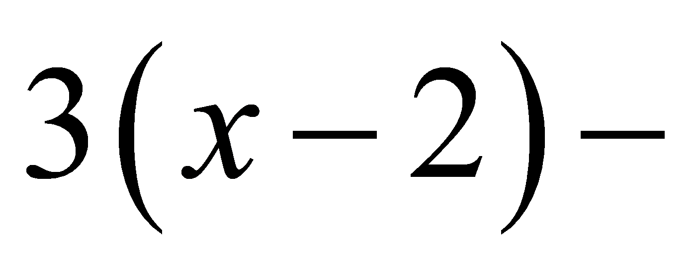


(1)求所挡住的二次三项式；
(2)若 ，求所挡住的二次三项式的值．
，求所挡住的二次三项式的值．
32．印卷时，工人不小心把一道化简题前面的一个数字遮住了，结果变成■ .
.
(1)某同学辨认后把“■”猜成10，请你算算他的结果是多少？
(2)老师说“你猜错了，我看到题目遮挡的数字是单项式 的系数和次数之积”，那么被遮挡住的数字是几？
的系数和次数之积”，那么被遮挡住的数字是几？
(3)若化简结果是一个常数，请你再算遮挡的数字又是多少？
33．印卷时，工人不小心把一道化简题前面一个数字遮住了，结果变成：■x2y﹣[5xy2﹣2（﹣ xy+
xy+ x2y）﹣
x2y）﹣ xy]+5xy2．
xy]+5xy2．
(1)某同学辨认后把“■”猜成10，请你帮他算算化简后该式是多少；
(2)若化简结果是一个常数，请算算■表示的数是多少？
34．小明同学在写作业时，不小心将一滴墨水滴在卷子上，遮住了数轴 和
和 之间的数据（如图），设遮住的最大整数是a，最小整数是b．
之间的数据（如图），设遮住的最大整数是a，最小整数是b．
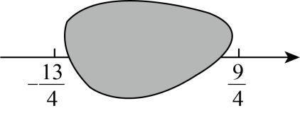
(1)求 的值；
的值；
(2)若 ，求
，求 的值．
的值．
35．在学习了整式的加减后，李明准备解答题目“已知M，N是两个整式，
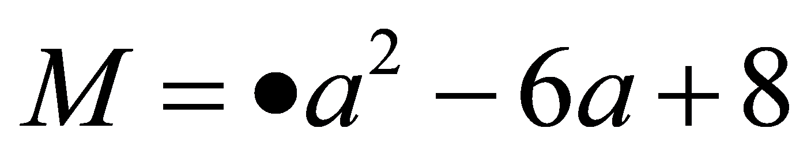
， ，求
，求 的值”时，发现整式
的值”时，发现整式 中含
中含 的项的系数（题中的“”处）被墨水污染了，模糊不清．
的项的系数（题中的“”处）被墨水污染了，模糊不清．(1)若被墨水污染的数字为3，请求出的值；
(2)李明向同学了解到被墨水污染的数字后，求得的值为常数．请直接写出被墨水污染的数字，并求出的值．
考点08 幻方
36．阅读材料，解答下列问题：
幻方历史悠久，传说最早出现在我国夏禹时代的“洛书”，如图1．把图1的洛书用今天的数学符号翻译出来，就是一个三阶幻方，如图2，它的每行、每列、每条对角线上的三个数的和都相等．
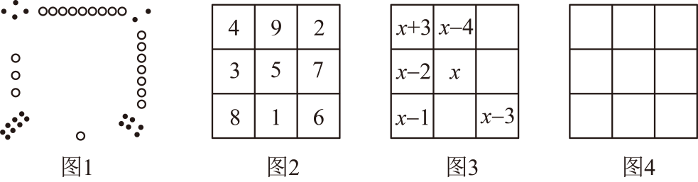
(1)在图2中，每行、每列、每条对角线上三个数的和都是_____；
(2)设图3所示的三阶幻方中间的数为（为整数），请用含的代数式将图3幻方补充完整．
(3)请将 、
、 、
、 、
、 、0、1、2、3、4这9个数分别填入图4的幻方的9个空格中，使处于每一横行、每一竖列以及两条斜对角线上的数的和都相等．
、0、1、2、3、4这9个数分别填入图4的幻方的9个空格中，使处于每一横行、每一竖列以及两条斜对角线上的数的和都相等．
37．如图是一个三阶幻方，是将数字1，2，3，4，5，6，7，8，9填入到 的方格中得到的，其每横行、每竖列、每条对角线上的三个数之和相等．
的方格中得到的，其每横行、每竖列、每条对角线上的三个数之和相等．
(1)请将10、8、6、4、2、0、、、 这九个数填入图2的方格中，使其每一横行，每一竖列以及每条对角线上的三个数字之和都相等：
这九个数填入图2的方格中，使其每一横行，每一竖列以及每条对角线上的三个数字之和都相等：
(2)如图3所示的三阶幻方中，其每一横行，每一竖列以及每条对角线上的三个数字之和都相等，若 ，
，
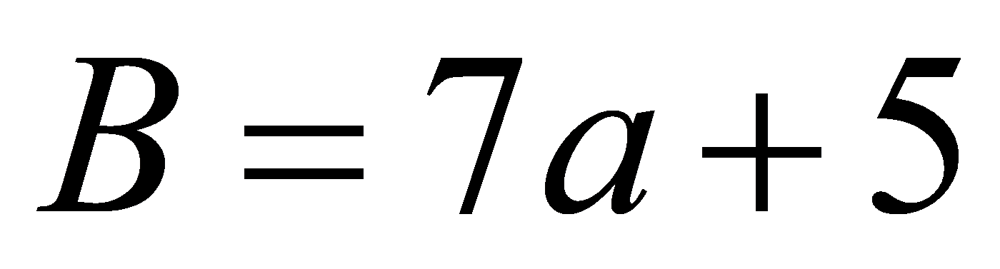
， ，
，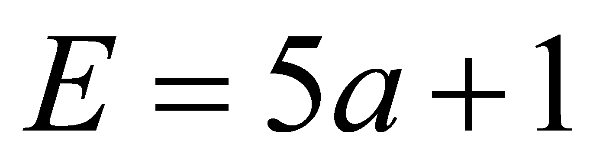
．①求整式F．
②试比较
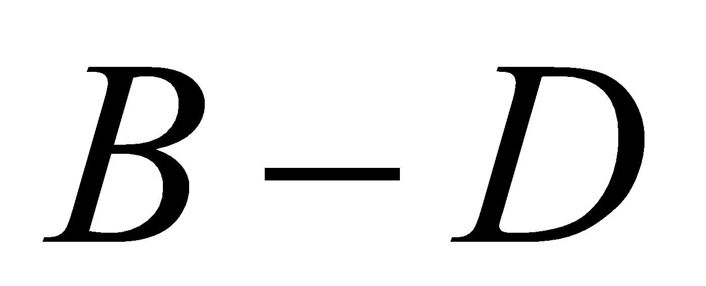
与 的大小关系，并说明理由．
的大小关系，并说明理由．38．综合与实践【数学背景】幻方是一种中国传统益智游戏，它是将数字安排在正方形格子中使每行、每列及对角线上的数字和都相等的方法．
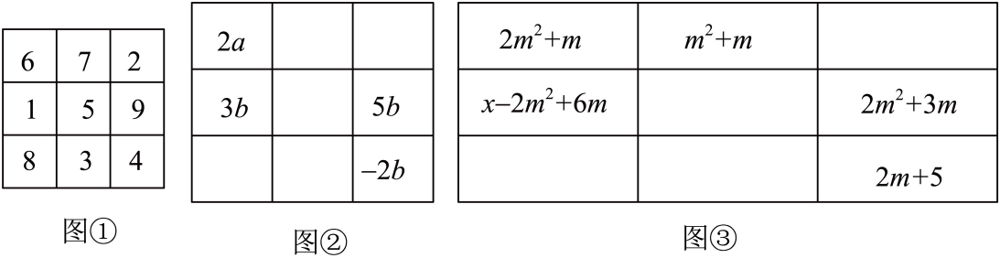
【问题提出】
（1）如图①，将1，2，3，4，5，6，7，8，9九个数填入到3×3的方格内，使每行、每列及对角线上的数字和都相等，则这个和是_____．
【模型迁移】
（2）图②是显示部分式子的幻方，用含b的式子表示a．
（3）图③是显示部分式子的幻方，求x的值．
39．请阅读下列材料，并解答相应的问题：将若干个数组成一个正方形数阵，若任意一行，一列及对角线上的数字之和都相等，则称具有这种性质的数字方阵为“幻方”，例如图1是1个三阶幻方，是将数字1，2，3，4，5，6，7，8，9填入到的方格中得到的，其每行、每列、每条对角线上的三个数之和相等．
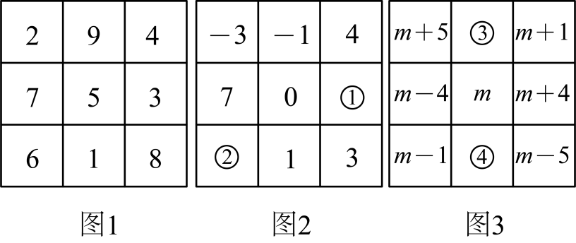
(1)请将图2的三阶幻方补充完整：① ，② ；
(2)设图3的三阶幻方中间的数是m（其中m为正整数），请用含m的代数式将图3的幻方填充完整：③ ，④ ；
(3)若设第（2）题幻方中9个数的和为S，则S与中间的数字m之间的数量关系为： ．
40．图1是一个三阶幻方，是将数字1，2，3，4，5，6，7，8，9填入到的方格中得到的，其每横行、每竖列、每条对角线上的三个数之和相等．
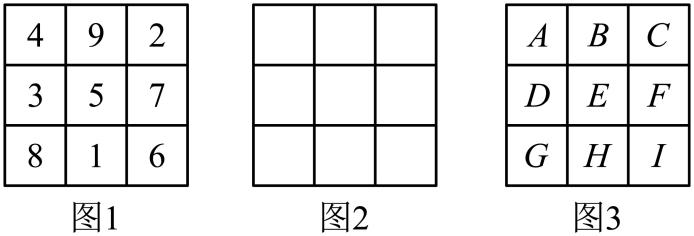
(1)请将6、4、2、0、、、、 、
、 这九个数填入图2的方格中，使其每一横行，每一竖列以及每条对角线上的三个数字之和都相等；
这九个数填入图2的方格中，使其每一横行，每一竖列以及每条对角线上的三个数字之和都相等；
(2)如图3所示的三阶幻方中，其每一横行，每一竖列以及每条对角线上的三个数字之和都相等，若，，，，求整式D．
考点09 去绝对值后合并同类项
41．已知有理数a，b，c在数轴上对应位置如图所示：
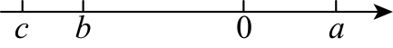
(1)用“ ”，“
”，“ ”填空：
”填空：
 ；
； ；
； ；
；
(2)化简： ．
．
42．有理数a、b、c在数轴上的位置如图：
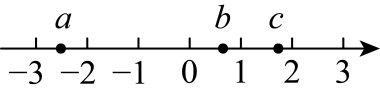
(1)用“>”或“<”填空： 0， 0，
0，
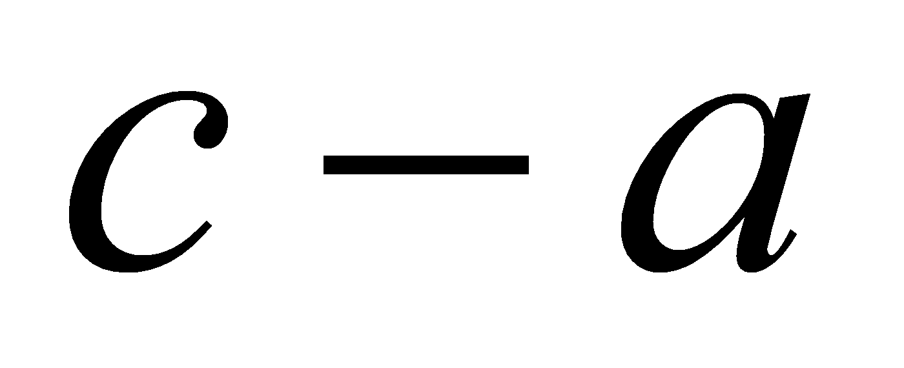
0．(2)化简：
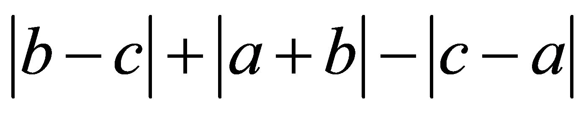
．43．数轴上表示数 ，c的点如图所示．
，c的点如图所示．
(1)比较大小：
 ,
, b；(填“”、“
b；(填“”、“ ”或“”)
”或“”)
(2)化简：
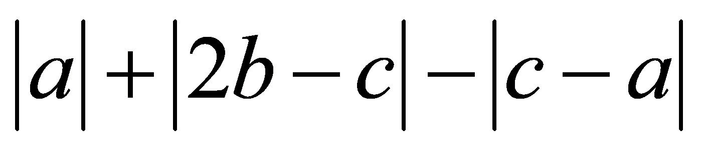
．44．已知有理数x，y，z在数轴上的位置如图所示．
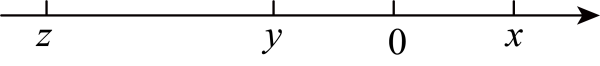
(1)若 ，则
，则
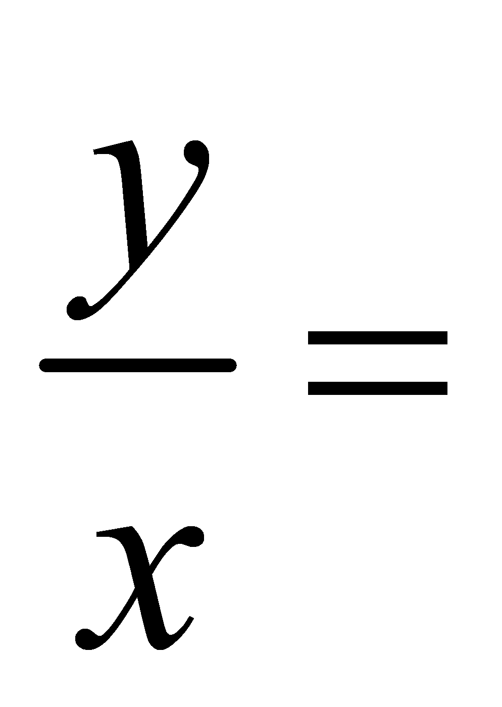
________，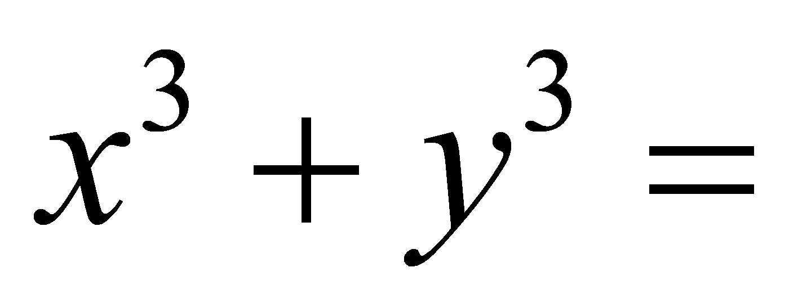
________；(2)化简： ．
．
45．有理数，， 在数轴上的位置如图所示．
在数轴上的位置如图所示．
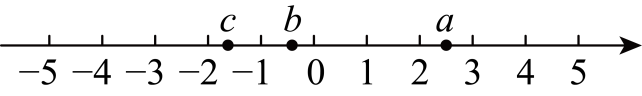
(1)用“”“”或“”填空： ______0；
______0； _____0；
_____0； _____0；
_____0；
(2)化简： ．
．
考点10 定义新运算
46．对于有理数 ，定义一种新运算“
，定义一种新运算“ ”，规定
”，规定
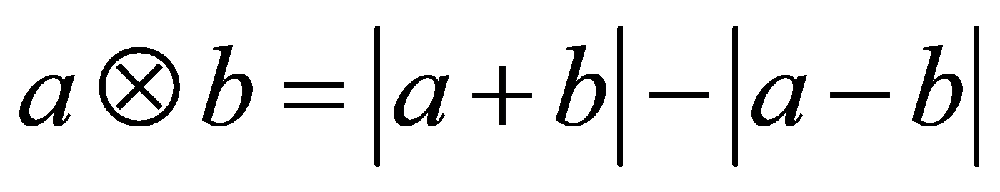
．(1)计算 的值；
的值；
(2)已知
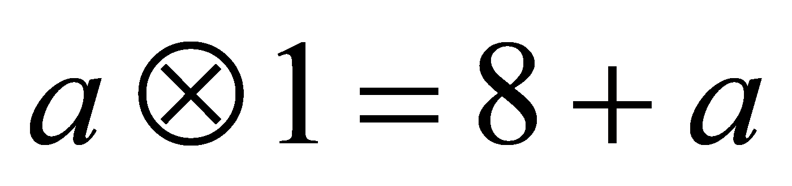
，求a的值．47．定义新运算：满足A〇B＝A﹣3B．
（1）计算3〇（﹣2）的值；
（2）当A＝2x2﹣3xy﹣y，B＝﹣x2+xy y，化简A〇B并按x进行降幂排列．
y，化简A〇B并按x进行降幂排列．
（3）若（x+2）2+|y﹣1|＝0，求第（2）问中A〇B的值．
48．给出新定义如下：
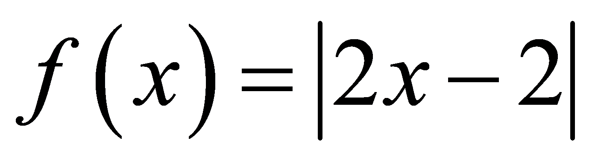
，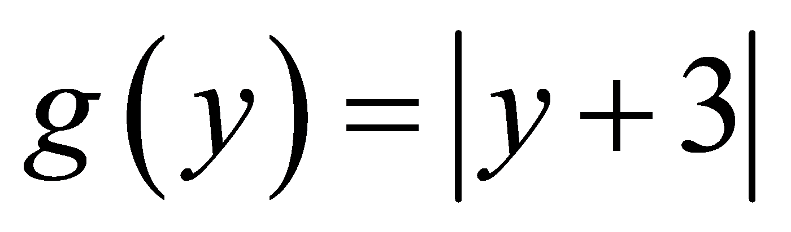
；例如： ，
， ．
．
根据上述知识，解下列问题：
(1)若 ，
， ，则
，则
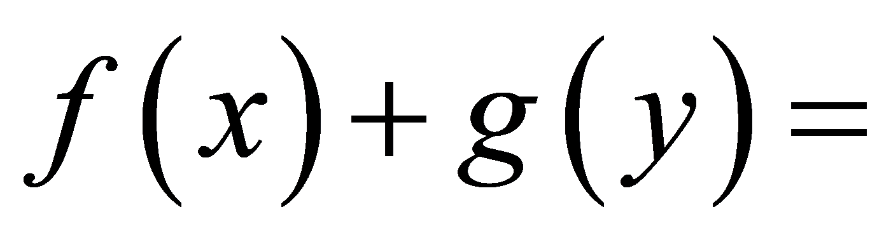
______；(2)若 ，化简：；（结果用含x的代数式表示）
，化简：；（结果用含x的代数式表示）
49．综合与探究
对于两个有理数和，我们定义一种新的运算“ ”
”
例如：．
根据以上材料，回答下列问题：
(1)计算下列各式的值：
①_____②_____③ _____
_____
(2)已知有理数满足 且
且 ，若，求的值（用含的式子表示）
，若，求的值（用含的式子表示）
(3)在（2）的条件下，进一步探究：是否存在 使得式子与的取值无关？若存在，请求出的值；若不存在，请说明理由．
使得式子与的取值无关？若存在，请求出的值；若不存在，请说明理由．
50．对于整数a，b，定义一种新的运算“⊙”：当为偶数时，规定 ；当为奇数时，规定．
；当为奇数时，规定．
(1)当 ，
， 时，求
时，求 的值．
的值．
(2)当 ，
， 时，求的值．
时，求的值．
(3)已知 ，，求式子
，，求式子 的值．
的值．
(4)已知 ，，求a的值．
，，求a的值．
考点11 “无关”类问题
51．已知多项式 ，
， ．
．
(1)当时，求的值；
(2)的值与，的取值是否有关？试说明理由．
52．小明在做题时错将题目中的“ ”看成“”，算得结果，已知
”看成“”，算得结果，已知
(1)求多项式；
(2)小强说正确结果的大小与的取值无关，对吗？请说明理由；
(3)若 ，求正确结果的代数式的值．
，求正确结果的代数式的值．
53．已知 ，．
，．
(1)若，求的值；
(2)若代数式 的值与字母x的取值无关，求y的值．
的值与字母x的取值无关，求y的值．
54．化简和求值：
(1)已知 ， ．求的表达式：
．求的表达式：
(2)若代数式 的值与字母 x 的取值无关，求 的值．
的值．
55．已知： ，
， ，若
，若 的值与字母x取值无关，求
的值与字母x取值无关，求 的值．
的值．
考点12 面积相关整式的加减
56．如图是某种窗户的形状（实线为窗框），其上部是半圆形，下部是边长为的四个小正方形．
(1)求窗户的面积；（用含x的代数式表示，结果保留 ）
）
(2)若 ，现要给窗户安装玻璃，玻璃每平方米30元，求安装玻璃的费用．（取3.14，结果精确到1元）
，现要给窗户安装玻璃，玻璃每平方米30元，求安装玻璃的费用．（取3.14，结果精确到1元）
57．文房四宝中的砚台是中国毛笔书法的必备用具，图中砚台外部的正方形边长为m，内部图形凹槽半径为n
(1)用含有 的式子表示砚台阴影部分的面积为______；
的式子表示砚台阴影部分的面积为______；
(2)当 时，求砚台阴影部分的面积．（取3）
时，求砚台阴影部分的面积．（取3）
58．某学校有一块边长为 的正方形草坪，计划在该草坪内修建宽均为
的正方形草坪，计划在该草坪内修建宽均为 的小路．
的小路．
(1)若按图（ ）中的方式修建小路，则草坪的实际面积是多少平方米?（用含的代数式表示）
）中的方式修建小路，则草坪的实际面积是多少平方米?（用含的代数式表示）
(2)若按图（ ）中的方式修建小路，则草坪的实际面积是多少平方米?（用含的代数式表示）
）中的方式修建小路，则草坪的实际面积是多少平方米?（用含的代数式表示）
59．如图，正方形花坛 的边长为a米．物业公司现计划在阴影部分种植三角梅，每平方米种植一棵．已知甲、乙两种植基地的三角梅每棵的标价都是5元一棵，但甲、乙两种植基地的优惠条件不同
的边长为a米．物业公司现计划在阴影部分种植三角梅，每平方米种植一棵．已知甲、乙两种植基地的三角梅每棵的标价都是5元一棵，但甲、乙两种植基地的优惠条件不同
甲基地：若购买不超过10棵，则按标价付款；若一次购买10棵以上，则超过10棵的部分按标价的 付款；乙基地：按标价的付款
付款；乙基地：按标价的付款
(1)根据图中数据，用含a，b的代数式表示阴影部分的面积S
(2)若物业公司计划购买m（ ）棵三角梅，请用含m的式子分别表示在两种基地购买三角梅方案的花费：
）棵三角梅，请用含m的式子分别表示在两种基地购买三角梅方案的花费：
(3)①当 ，
， 时，求阴影部分的面积．
时，求阴影部分的面积．
②根据①求出来的面积，你认为在甲、乙两种植基地中，到哪个种植基地购买比较划算？说明理由．
60．一个三角尺的形状和尺寸如图所示，用代数式表示这个三角尺的面积，当， ，
， ，求这个三角尺的面积（
，求这个三角尺的面积（ 取
取 ）．
）．
考点13 方案问题相关整式的加减
61．某电器商销售一种微波炉和电磁炉，微波炉每台定价 元，电磁炉每台定价
元，电磁炉每台定价 元．“十一”期间商场决定开展促销活动，活动期间向客户提供两种优惠方案：
元．“十一”期间商场决定开展促销活动，活动期间向客户提供两种优惠方案：
方案一：买一台微波炉送一台电磁炉；
方案二 ：微波炉和电磁炉都按定价的 付款．
付款．
现某客户要到该卖场购买微波炉 台，电磁炉台（）．
台，电磁炉台（）．
(1)若该客户按方案一购买，需付款 元（用含的代数式表示）；若该客户按方案二购买，需付款 元（用含的代数式表示）
(2)若 ，通过计算说明此时按哪种方案购买较为合算？
，通过计算说明此时按哪种方案购买较为合算？
(3)当时，你能给出一种更为省钱的购买方案吗？试写出你的购买方法并计算需付款多少元？
62．从2024年开始，全省中考体育分值将以百分比的形式计入中考总分，某校为适应新的中考要求，决定为体育组添置一批体育器材，学校准备在网上订购一批某品牌足球和跳绳，在查阅天猫网店后发现足球每个定价120元，跳绳每条定价20元．现有A、B两家网店均提供包邮服务，并提出了各自的优惠方案．A网店：买一个足球送一条跳绳；B网店：足球和跳绳都按定价的90%付款．已知要购买足球60个，跳绳x( )．
)．
(1)在A网店购买需付款___________元；在B网店购买需付款___________元；（用含x的代数式表示）
(2)若时，通过计算说明此时在哪家网店购买较为合算？
63．在“珍爱生命，幸‘盔’有你”为主题的交通安全宣传教育下，人们骑乘电动自行车佩戴头盔的安全意识不断提高．某电动自行车店计划分别购进30个安全头盔和若干副电动自行车手套，店经理联系了批发商，他们之间的对话如下：
您好，请问安全头盔和手套的批发价 分别是多少元？ | 您好，头盔40元/个，手套20元/副， 有以下两种优惠方案：方案一：整体打九折； 方案二：原价购买两个头盔赠送一副手套． |
(1)电动自行车店计划购买30个安全头盔和a副手套（ ），若选择方案一购买，需要花费 元（用含a的代数式表示），若选择方案二购买，需要花费 元（用含a的代数式表示）；
），若选择方案一购买，需要花费 元（用含a的代数式表示），若选择方案二购买，需要花费 元（用含a的代数式表示）；
(2)当 时，通过计算说明此时按哪种方案购买较为合算？
时，通过计算说明此时按哪种方案购买较为合算？
64．某校七年级学生在8名教师的带领下进入某山庄秋游，该山庄的门票为每人30元，现山庄为这次活动提供了两种优惠方案：
方案一：带队教师免费，学生按9折收费；
方案二：师生都8.5折收费．
设该七年级参与活动的学生有名．
(1)用含的代数式表示：该校七年级的这次秋游活动分别按两种优惠方案各需付给山庄门票款多少？（要求：能化简的要化简．）
(2)若此次参与活动的学生有150名，请通过计算说明用哪种优惠方案较为合算？
65．为了提高学生的身体素质，学校积极倡导“每天运动一小时，幸福快乐一辈子”的健康理念．为此，学校体育部计划采购羽毛球拍60副，羽毛球 筒，以丰富学生的体育活动，鼓励他们积极参与体育锻炼．某商店羽毛球拍的定价为150元/副，羽毛球的定价为30元/筒，商店为学校提供了两种采购方案．
筒，以丰富学生的体育活动，鼓励他们积极参与体育锻炼．某商店羽毛球拍的定价为150元/副，羽毛球的定价为30元/筒，商店为学校提供了两种采购方案．
方案一：买一副羽毛球拍送一筒羽毛球．
方案二：羽毛球拍和羽毛球都按定价的收费．
(1)如果学校按方案一采购，需要付款________元；如果学校按方案二采购，需要付款________元．（用含的代数式表示）
(2)若 ，请你通过计算说明学校按哪个方案采购比较划算．
，请你通过计算说明学校按哪个方案采购比较划算．
(3)在（2）的条件下，若两种优惠方案可同时使用，你能再给出一种更省钱的采购方案吗？请写出采购方案和具体费用．